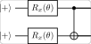

Algorithms / 算法 | 难度：中级 | 预计时间：15 分钟
量子退火是解决组合优化问题的量子算法，是 D-Wave 量子计算机的核心。
经典模拟退火容易陷入局部最优
对于复杂能量景观，经典方法效率低
量子退火利用量子隧穿效应逃离局部最优
对于某些问题，量子退火比经典方法更快
是 D-Wave 量子计算机的核心算法
组合优化（MaxCut、TSP）
机器学习（训练玻尔兹曼机）
金融（投资组合优化）
from quonic.algorithms import quantum_annealing
# Define optimization problem
problem = {"0-1": -1, "1-2": -1, "2-3": -1}
# Run quantum annealing
result = quantum_annealing(problem, steps=100)
print(f"Solution: {result.solution}")
print(f"Energy: {result.energy}")预期输出：
Solution: [1, 0, 1, 0]
Energy: -3
量子退火的哈密顿量： \[\begin{equation} H(t) = (1 - t/T) H_0 + (t/T) H_P \end{equation}\]
其中 \(H_0\) 是初始哈密顿量（横向场），\(H_P\) 是问题哈密顿量。
退火过程：
从 \(H_0\) 的基态开始
缓慢演化到 \(H_P\)
绝热定理保证系统保持在基态
最终测量得到 \(H_P\) 的基态
量子退火在能量景观中寻找最低点。量子隧穿效应允许系统穿过能量壁垒，逃离局部最优。
from quonic.algorithms import quantum_annealing
# quantum_annealing(problem, steps, shots)
# problem: dictionary of couplings {(i,j): weight}
# steps: number of annealing steps
# shots: number of measurements
result = quantum_annealing(problem, steps=100, shots=1024)
# result.solution: bit string solution
# result.energy: energy of solution
# result.history: annealing history
print(f"Solution: {result.solution}")# MaxCut problem
problem = {"0-1": -1, "1-2": -1, "2-0": -1}
result = quantum_annealing(problem, steps=100)
# TSP problem
from quonic.optimization import tsp_to_qubo
problem = tsp_to_qubo(cities)
result = quantum_annealing(problem, steps=200)# More steps for better results
result_100 = quantum_annealing(problem, steps=100)
result_500 = quantum_annealing(problem, steps=500)
result_1000 = quantum_annealing(problem, steps=1000)量子退火可以用于各种组合优化问题。
量子退火可以用于训练玻尔兹曼机。
量子退火可以用于投资组合优化。
量子退火是连续时间演化，QAOA 是离散时间演化。量子退火用 D-Wave 硬件，QAOA 用门模型硬件。
理论上，绝热定理保证系统保持在基态。但实际中，退火速度有限，可能跳出基态。
组合优化基础
哈密顿量
绝热定理
QAOA
量子优化
D-Wave 编程
from quonic.algorithms import quantum_annealing
problem = {"0-1": -1, "1-2": -1, "2-3": -1}
result = quantum_annealing(problem, steps=100)
print(f"Solution: {result.solution}")